点球大战 · 全面自测记录
2026-09-21 · 87 项自动测试通过 · 180 组新增混合射门 · 两种模式完整比赛 · 开发版与生产构建
本轮修复：碰撞位置修正导致足球轻微陷入草地；弹窗关闭丢失焦点与背景控件可访问；模式和扑救选择缺少辅助状态；过期提示残留。构建通过，当前 Three.js 主包约 598 kB，仍有体积提醒。
范围：本机内置浏览器、鼠标及键盘、320×568 / 390×844 / 1280×900。真实手机触摸、移动 GPU、Safari/Firefox、读屏器及长时间压力测试尚未验证。高级射门依赖拖动，尚无纯键盘替代输入。截图不能证明完整无障碍合规。犯规、重罚、伤停等赛事管理功能尚未建模。
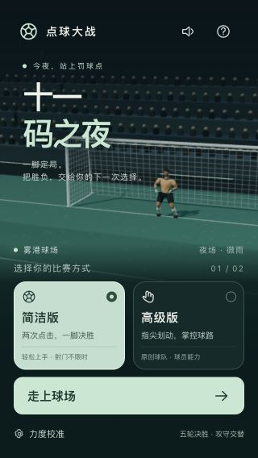
1. 小屏首页 · 通过
320×568：首页内容与开始按钮完整可见。模式按钮补充选中状态，切换后保留键盘焦点。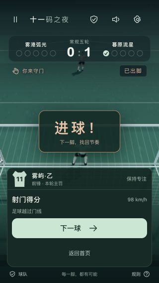
2. 简洁模式结算与恢复 · 通过
暂停后刷新，右路预判与剩余 2.5 秒恢复；继续后仅结算一次。下一球与返回首页可点击。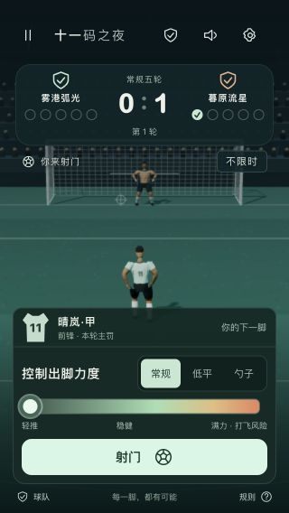
3. 方向、力量与射门方式 · 通过
方向锁定后进入力度选择，常规／低平／勺子排版完整；低平射门正常计分。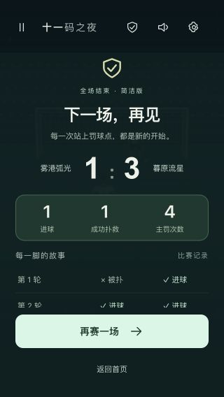
4. 简洁整场比赛 · 通过
1:3，双方各罚四次后提前结束；进球、扑救、逐轮记录相符。小屏记录区域可滚动。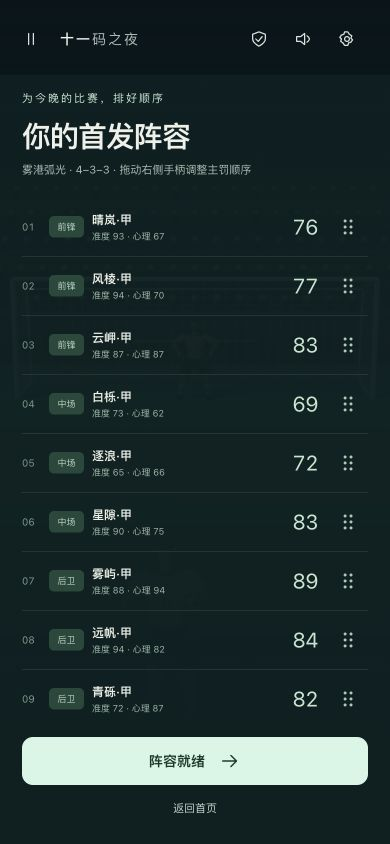
5. 高级阵容排序 · 通过
真实拖动风棱·甲到首位，比赛首位主罚球员同步变化。11 人名单可滚动。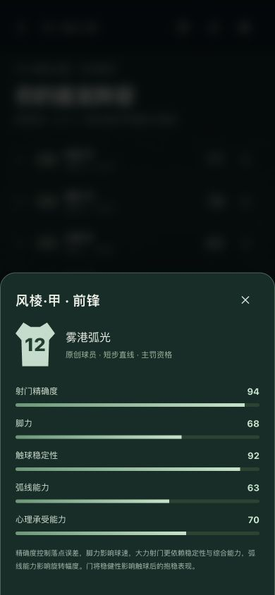
6. 球员能力与弹窗 · 通过
显示准度、脚力、稳定性、弧线和心理。修复弹窗背景隔离与关闭后焦点返回。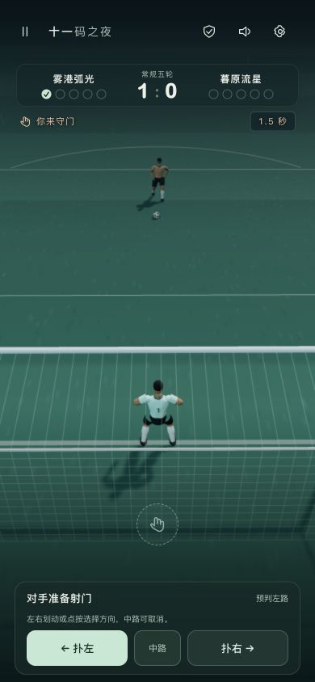
7. 高级守门 · 通过
点按右路→中路取消→向左滑动，选中状态和文案同步。390×844 对方球员、球门与操作区清晰可见。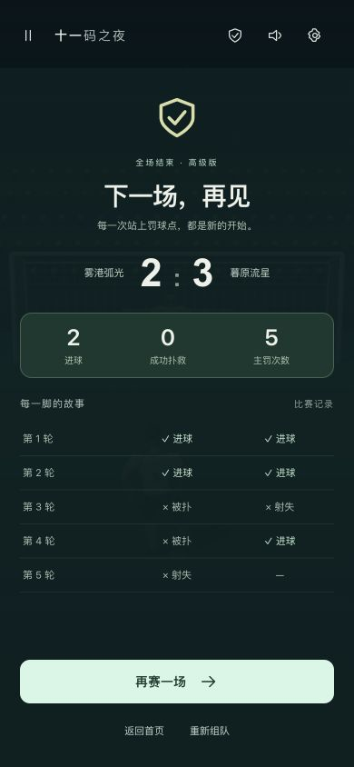
8. 高级整场比赛 · 通过
2:3，我方第五罚失误后提前结束，对手第五罚显示空缺。验证 48 km/h 勺子、93 km/h 低平、17 km/h 超时轻射；每脚恢复常规。再赛与返回首页正常。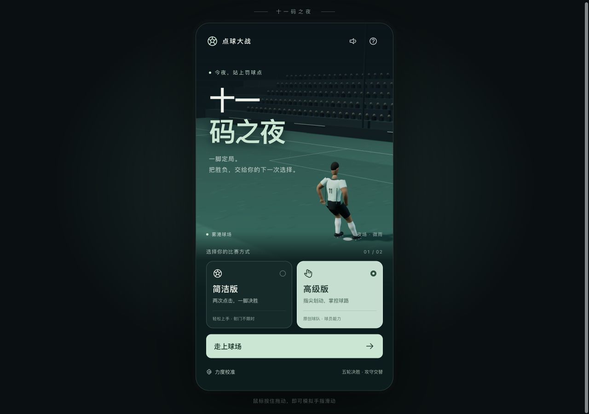
9. 生产版桌面首页 · 通过
1280×900，无横向溢出；首页动画正常。构建后可独立运行。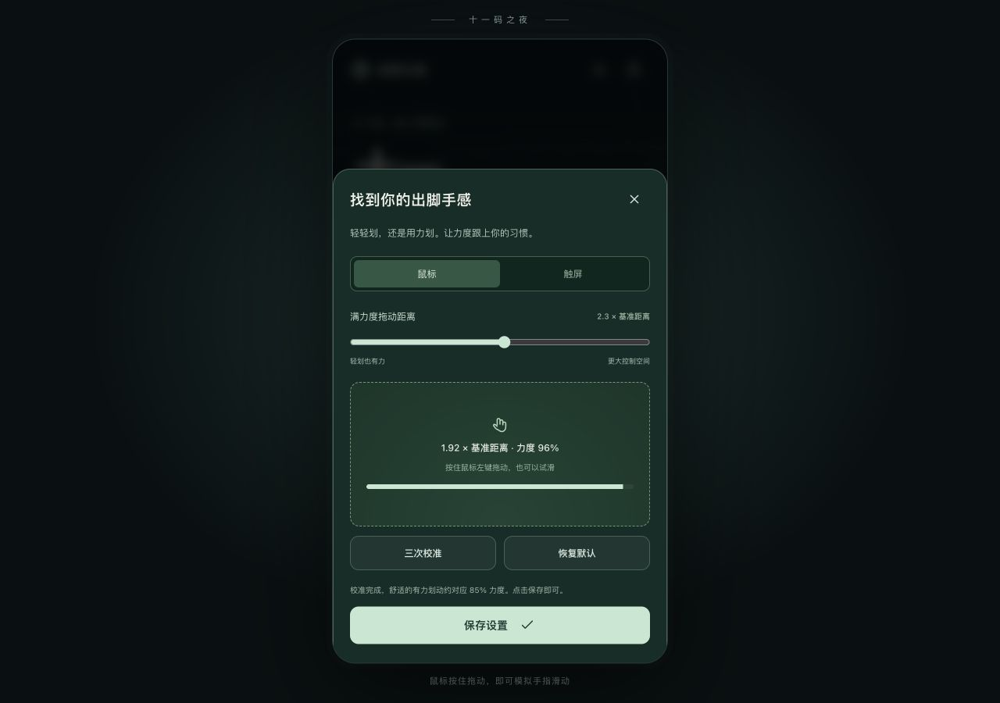
10. 校准及键盘导航 · 通过
三次真实拖动校准到 2.3，保存刷新后仍为 2.3。Shift+Tab 在弹窗首尾循环，Escape 返回原按钮；已消失提示从辅助阅读内容中清除。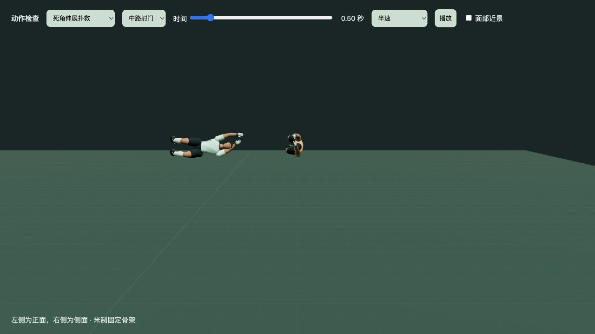
11. 动作检查页 · 通过
死角伸展扑救可切换半速、播放至末尾停止，并定位到 0.50 秒。双视图正常，控制台无应用错误。